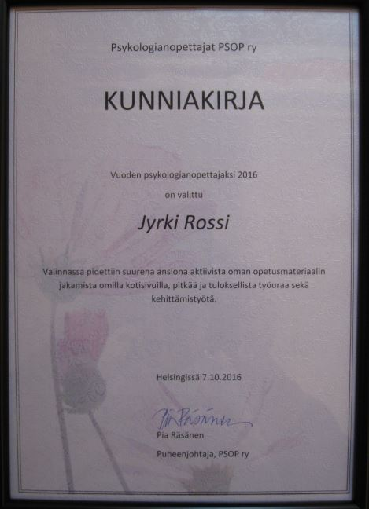
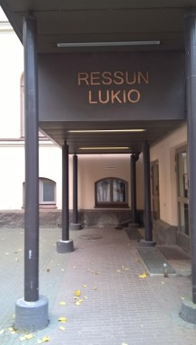
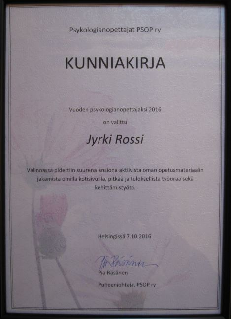
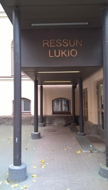
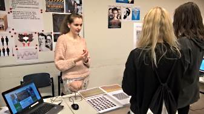
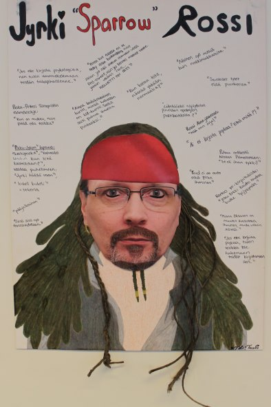

OPETUSPSYKAN VIDEOABIKURSSIT: PSYKOLOGIAN MAAILMA -VIDEOKERTAUSKURSSI ABEILLE (vlogi) - UUSI OPS!! PS7 ABI KERTAUSKURSSI (opetustilanne) - VANHA OPS (OPS 2016-): PS1 Psyykkinen toiminta ja oppiminen PS2 Kehittyvä ihminen PS3 Tietoa käsittelevä ihminen PS4 Tunteet, psyykkinen hyvinvointi ja mielenterveys PS5 Yksilöllinen ja yhteisöllinen ihminen PS2 Kehittyvä ihminen PS3 Tietoa käsittelevä ihminen PS4 Tunteet, psyykkinen hyvinvointi ja mielenterveys PS5 Yksilöllinen ja yhteisöllinen ihminen Syksyllä 2016 vaihtui 1. vuoden opiskelijoista alkaen uusi lukion opetussuunnitelma. Olen tehnyt uuden opetussuunnitelman mukaiset muistiinpanot sivustolleni kaikista psykologian valtakunnallisista kursseista PS1-PS5. Toivottavasti niistä on iloa ja hyötyä sinulle opiskellessasi tai opettaessasi psykologiaa. Olen erottanut vielä vanhan ja uuden OPSin kurssit yksinkertaisesti v- ja u-kirjaimilla kurssin lyhenteen edessä. Vanhat PS-kurssimuistiinpanot siirrän ö-mappiin, kunhan uusi OPS on täysin käytössä Suomessa. Uuden OPS:n mukaiset kurssimuistiinpanot sisältävät paljon aivan uutta tietoa, jota ei ole suomalaisissa oppikirjoissa nyt tai aiemmin ollut esillä. Olen kuitenkin nähnyt tärkeäksi nostaa esiin joitakin maailman tunnetuimpia psykologeja ja heidän uusia teorioitaan. Tietenkin eri kustantajien oppikirjoissa on myös paljon sellaista psykologista tietoa, jota minulla ei ole. Siksi kehotankin opiskelijoita lukemaan muistiinpanojeni lisäksi aina oppikirjasarjan, jonka opettaja on valinnut koulusi käyttöön. Muistiinpanoni tulevat jatkuvasti täydentymään ja varsinkin kuvamateriaalia on tulossa huomattavasti lisää. |
TERVETULOA OPISKELEMAAN PSYKOLOGIAA! MUISTATHAN PSYKOLOGIAN KERTAUSKURSSI PS7ABI ELI SAMALLA KOKO LUKION PSYKOLOGIA YOUTUBESSA VIDEOKLIPPEINÄ, JOILTA VOIT KERRATA ASIOITA JA TARKISTAA NIITÄ. KLIKKAA VASEMMALTA PS7ABI! Olen saanut paljon hyvää palautetta niin omilta oppilailtani kuin opiskelijoilta ja opettajilta eri puolilta Suomea. Ideani on ollut se, että opiskelija voi tulostaa muistiinpanot itselleen tunnille ja siten keskittyä kirjoittamisen sijasta kuuntelemiseen ja lisämuistiinpanojen tekemiseen. Materiaali on sekä opettajille että opiskelijoille vapaasti käytettävissä opetuksen suunnitteluun ja opiskeluun. Nettiin omille sivuille materiaalia ei saa siirtää. Osia lainattaessa on korrektia mainita aina lähde eli sivustoni nimi ja url-osoite. Psykologian opettajien päivillä 7.-8.10.2016 palkittiin edelleen ihmetyksen vallassa ollut vuoden psykologian opettaja, joka sai kuunnella hienoja luentoja ja tavata upeita opettajakolleegojaPSOP ry:n aineliitonpäivät pidettiin perinteikkäällä Ressun lukiolla Helsingin Kalevankadulla. Luentoja oli mm. opiskelijoiden ajattelun näkyväksi tekemisestä kuin väkivallan psykobiologiasta ja oikeuspsykologiasta. Perjantain juhlassa kunniakirjan minulle ojensi PSOP ry:n hallituksen pj. rehtori Pia Räsänen. Tällaiselle yksin työtään puurtavalle opettajalle oli iloinen ja hyvin myönteinen kokemus kohdata oman alan muita opettajia ja jakaa heidän kanssaan kokemuksiaan. Kiitos teille kaikille! 


Kovat kaulaan ja liiton päiville perinteikkään kuuluisalle Ressun lukiolle Helsingissä! |
Puhuppa pari vlogia vuodelta 2016 (joskus ehkä lisää...) ONNELLISUUS (kesto 23m26s) IHMISSUHTEISTA (kesto 25m38s) RAKKAUS (kesto 20m57s) Riippuvuudet-VP (kesto 15m49s) PERSOONALLISUUS (kesto 45m26s) NUKKUMINEN (kesto 35m44s)  Psykologian osasto yseille suunnatuilla lukiomessuilla 2016. Esittelijänä Tuuli Laulainen.  |
PÄIVITYS 7.6.2018 -- PSYKOLOGIAN MAAILMA -videokurssi
© Jyrki Rossi, 1999-2018 ---MAIL: etunimi.sukunimi@aanekoski.fi
© Jyrki Rossi, 1999-2018 ---MAIL: etunimi.sukunimi@aanekoski.fi